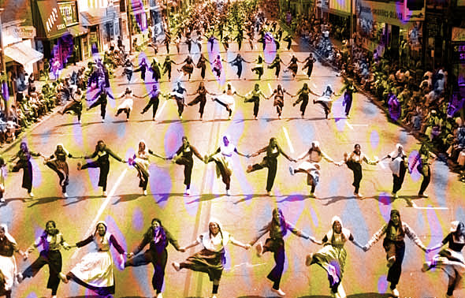

À tous les cinq ans se tient cette grande célébration qu'est le festival du formulaire. À cette occasion tous les citoyens sont autorisés à fêter joyeusement dans les rues de la capitale sous la surveillance du ministère de l'information. Sur cette photo on voit les conscrits de la 35e brigade du 6e régiment d'infanterie exécuter la danse du presse-papiers durant la parade qui clôture l'événement.